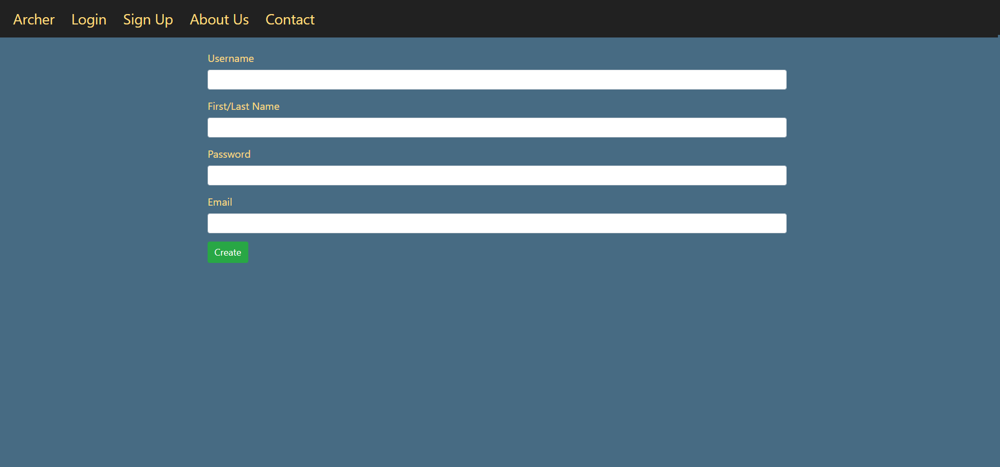
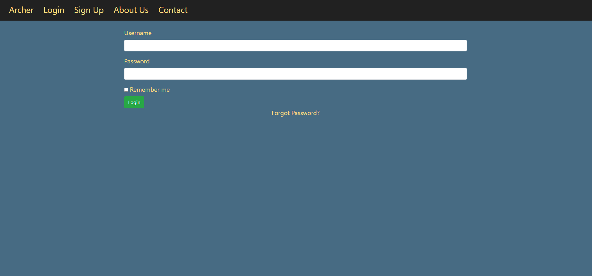
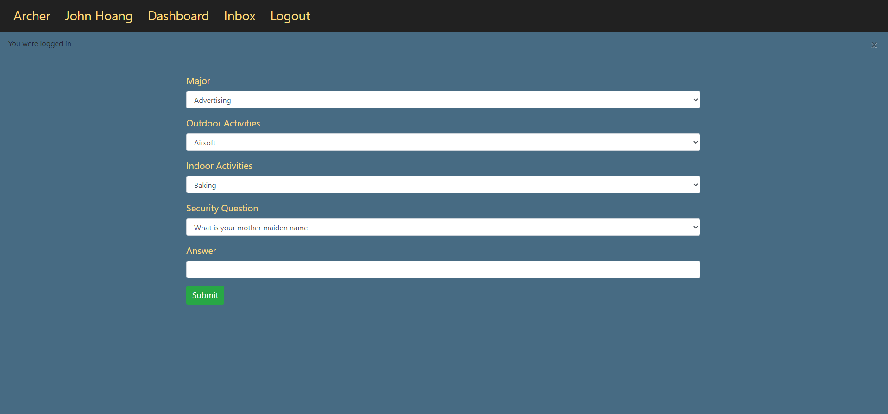
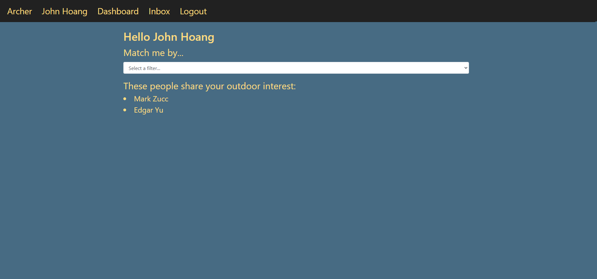
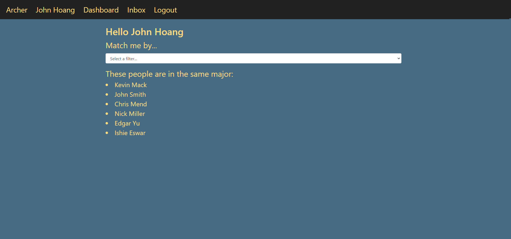

Landing page for new visitors.

Account registration page.

Users will either be redirected to the log in page after successful account registration
or can be directed to it instantly after clicking login on the navigation bar.

New accounts will be redirected to this survey forum upon their first time logging in.
Here, users will select their best fit choices per category, along with a security question for future
password resets if needed.
This is Archer's dashboard. Unique per account with the option to view other people's dash as well. The
dash includes the information gathered from the survey and friends the user has added. More information about it is shown
in the demo video below.
The "Match me by" option located on the left is Archer's unique feature that pairs users with other users with similar
survey answers.
Users can change their login information or their profile pictures.
Matching by indoor activity interests, users can find other users that enjoy the same hobbies or activities.

Matching by outdoor activity interests, users can find other users that enjoy the same hobbies or activities.

Users can also match based on their university major in hopes of finding a random classmate to befriend and grow a
connection.
This demo shows a run through of all of Archer's features and test cases.
Here, it explores all routes and logic the site has to offer!
Read about the background, challenges, and solutions about Archer!
Use arrow keys "<" or ">" to traverse through slides!